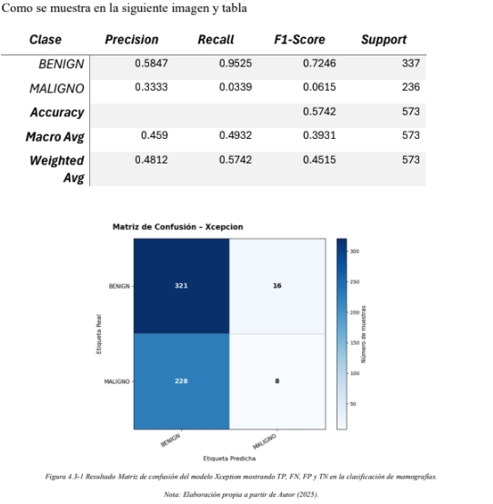
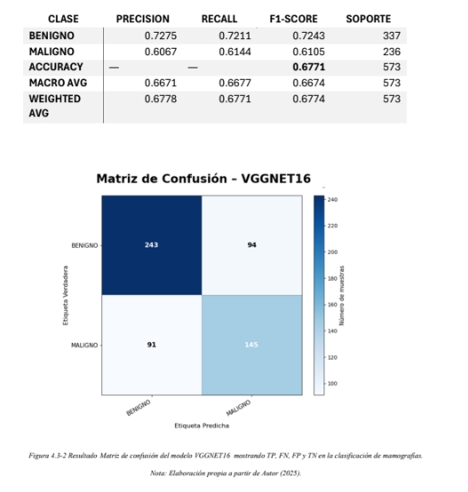
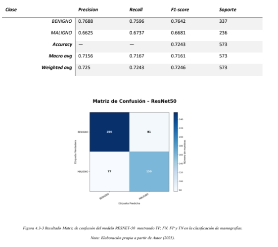

Xception
Proyecto basado en la arquitectura Xception para la clasificación automática de mamografías mediante aprendizaje profundo. Se empleó Transfer Learning y Fine-Tuning sobre imágenes del conjunto de datos CBIS-DDSM, integrando técnicas de preprocesamiento, aumento de datos y evaluación con métricas de desempeño para desarrollar un sistema de apoyo al diagnóstico de cáncer de mama.

Análisis de Rendimiento: Modelo Xception (Clasificación de Mamografías)
- Métrica Global: Se alcanzó un Accuracy de 57.4% en el conjunto de prueba.
- Sesgo de Predicción: El modelo presenta un sesgo crítico hacia la clase mayoritaria (Benign), logrando un Recall del 95.2% en esta categoría.
- El Desafío Clínico: La clase minoritaria (Malign) obtuvo un Recall de solo 3.4%, identificando correctamente únicamente 8 de 236 casos reales. El modelo clasificó erróneamente 228 muestras malignas como benignas (Falsos Negativos).
- Interpretación de Resultados: Aunque el modelo logra identificar la mayoría de los casos benignos, presenta dificultades para detectar lesiones malignas, evidenciando el impacto del desbalance de clases y la necesidad de aplicar estrategias de optimización para mejorar la sensibilidad diagnóstica.
Análisis de Rendimiento: Modelo VGGNet-16 (Clasificación de Mamografías)
Proyecto basado en la arquitectura VGGNet-16 para la clasificación automática de mamografías mediante aprendizaje profundo. Se implementó Transfer Learning utilizando pesos preentrenados de ImageNet sobre el conjunto de datos CBIS-DDSM, incorporando técnicas de preprocesamiento, aumento de datos y evaluación con métricas de desempeño para desarrollar un sistema de apoyo al diagnóstico de cáncer de mama.

Análisis de Rendimiento: Modelo VGGNet-16 (Clasificación de Mamografías)
- Métrica Global: Se incrementó el Accuracy general a 67.71% en el conjunto de prueba.
- Equilibrio de Predicción: A diferencia del modelo previo, este clasificador logró aprender patrones distintivos para ambas clases, reduciendo drásticamente el sesgo hacia la clase mayoritaria.
-
Rendimiento por Clase (Recall):
- Benigno: Alcanzó un 72.11%, clasificando correctamente 243 de 337 muestras.
- Maligno: Logró un 61.44%, identificando con éxito 145 de 236 casos reales de cáncer.
- Interpretación de Resultados: El modelo VGGNet-16 mostró una mejora significativa en la capacidad de generalización y en el equilibrio entre clases, logrando una detección más consistente de casos benignos y malignos, lo que representa un avance importante para aplicaciones de apoyo al diagnóstico médico.
Modelo ResNet-50 (Clasificación de Mamografías)
- Arquitectura Profunda: Se implementó un modelo basado en ResNet-50 preentrenado en ImageNet, utilizando Transfer Learning y conexiones residuales para extraer características visuales de alto nivel a partir de mamografías de alta resolución.
- Métrica Global: Se alcanzó el rendimiento general más alto de la comparativa, con un Accuracy de 72.43% en el conjunto de prueba.
- Consistencia Biclase: El modelo mostró un comportamiento altamente equilibrado y robusto, alcanzando un Macro F1-Score de 71.61%, lo que evidencia su capacidad para extraer características complejas y generalizables sin depender de la distribución de las clases.
-
Rendimiento por Clase (Recall):
- Benigno: Alcanzó un 75.96%, clasificando correctamente 256 de 337 casos.
- Maligno: Se elevó a un 67.37%, identificando con éxito 159 de 236 casos reales de lesiones malignas.
- Conclusión del Experimento: La arquitectura ResNet-50 demostró una capacidad superior de convergencia gracias a sus conexiones residuales. No solo mejoró el Accuracy global respecto a VGGNet-16 (≈ +4.7%), sino que además redujo los Falsos Negativos a su nivel más bajo (77 casos frente a los 228 obtenidos con Xception), incrementando simultáneamente la precisión en la detección de tumores malignos (Precision: 66.25%).
-
Ventajas Competitivas:
- Seguridad Clínica: Al maximizar el Recall de la clase "Maligno", disminuye significativamente el riesgo de omitir lesiones activas durante el proceso de diagnóstico automatizado.
- Equilibrio Operativo: Presenta el mejor balance entre sensibilidad clínica y especificidad médica, reduciendo tanto los Falsos Negativos como los Falsos Positivos (81 casos), lo que lo convierte en la arquitectura más robusta de la comparativa.
